All use cases


nbgl_useCaseReviewStreamingContinueExt
The same as Continue(), plus a Skip button whose callback is expected to jump straight to the signing page. Needs SKIPPABLE_OPERATION on the start.
void nbgl_useCaseReviewStreamingContinueExt(const nbgl_contentTagValueList_t *tagValueList,
nbgl_choiceCallback_t choiceCallback,
nbgl_callback_t skipCallback);With the Skip button 5 screens
static nbgl_contentTagValue_t pairs[2];
static nbgl_contentTagValueList_t pairList;
static nbgl_warning_t warning;
/** Index of the chunk the chain is currently showing. */
static uint8_t chunk;
/** Whether the chain uses nbgl_useCaseReviewStreamingContinueExt(). */
static bool skippable;
#define NB_CHUNKS 2
static void fill_chunk(uint8_t index) {
memset(pairs, 0, sizeof(pairs));
memset(&pairList, 0, sizeof(pairList));
if (index == 0) {
pairs[0].item = "Amount";
pairs[0].value = "1.2345 BOL";
pairs[1].item = "To";
pairs[1].value = "0x4A2b1F8c3D7e5A9b0C1d2E3f4A5b6C7d8E9f0A1b";
} else {
pairs[0].item = "Memo";
pairs[0].value = "Payment for invoice 2026-0142";
pairs[1].item = "Fees";
pairs[1].value = "0.00012 BOL";
}
pairList.pairs = pairs;
pairList.nbPairs = 2;
pairList.wrapping = true;
}
static void on_finish(bool confirm) {
nbgl_useCaseReviewStatus(
confirm ? STATUS_TYPE_TRANSACTION_SIGNED : STATUS_TYPE_TRANSACTION_REJECTED,
catalog_on_quit);
}
static void on_skip(void);
static void on_chunk(bool confirm);
/**
* Draw the next chunk, or the signing page once they are all shown. This is
* the loop an app runs while it streams: one Continue() per parsed chunk.
*/
static void show_next_chunk(void) {
if (chunk >= NB_CHUNKS) {
nbgl_useCaseReviewStreamingFinish("Sign transaction\nto send BOL?", on_finish);
return;
}
fill_chunk(chunk);
chunk++;
if (skippable) {
// The Ext flavour adds a "Skip" button, whose callback is expected to
// jump straight to the signing page.
nbgl_useCaseReviewStreamingContinueExt(&pairList, on_chunk, on_skip);
} else {
nbgl_useCaseReviewStreamingContinue(&pairList, on_chunk);
}
}
static void on_chunk(bool confirm) {
if (!confirm) {
on_finish(false);
return;
}
show_next_chunk();
}
static void on_skip(void) {
chunk = NB_CHUNKS;
show_next_chunk();
}
static void uc_review_streaming_continue_ext_chain(void) {
// ContinueExt() adds the Skip button, which only appears if the start was
// given SKIPPABLE_OPERATION; `skippable` true is what makes
// show_next_chunk() call ContinueExt() rather than Continue().
chunk = 0;
skippable = true;
nbgl_useCaseReviewStreamingStart(TYPE_TRANSACTION | SKIPPABLE_OPERATION,
&CATALOG_ICON_APP,
"Review transaction\nto send BOL",
NULL,
on_chunk);
}
Flex
480×600
{kind=link}
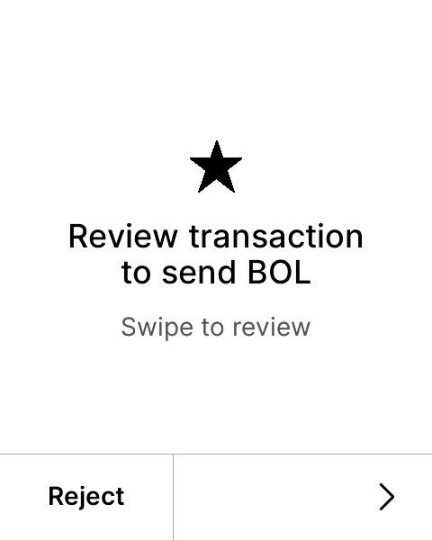
Next page{kind=link}
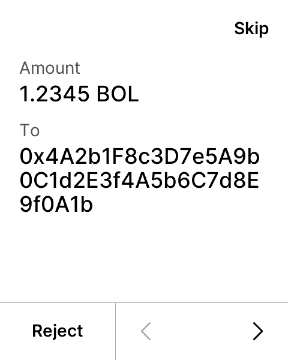
Next page{kind=link}
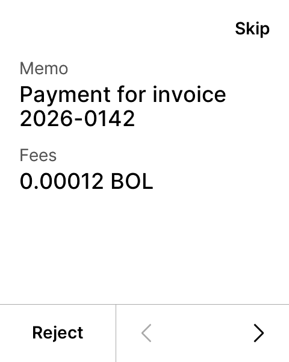
Next page{kind=link}
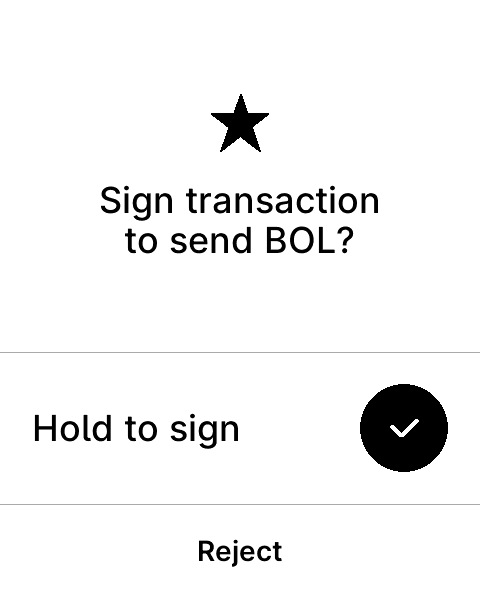
Hold “Hold to sign”
Apex P
300×400
{kind=link}
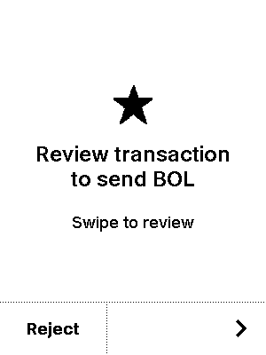
Next page{kind=link}
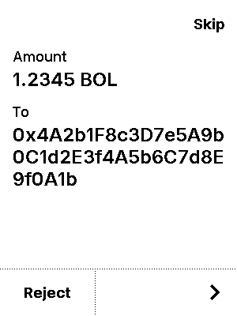
Next page{kind=link}
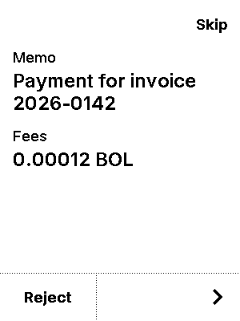
Next page{kind=link}
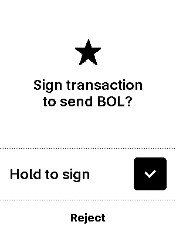
Hold “Hold to sign”
Stax
400×672
{kind=link}
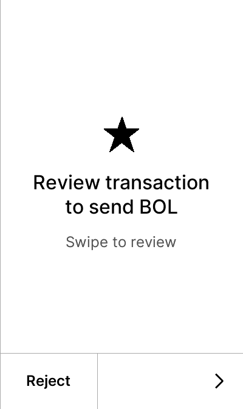
Next page{kind=link}
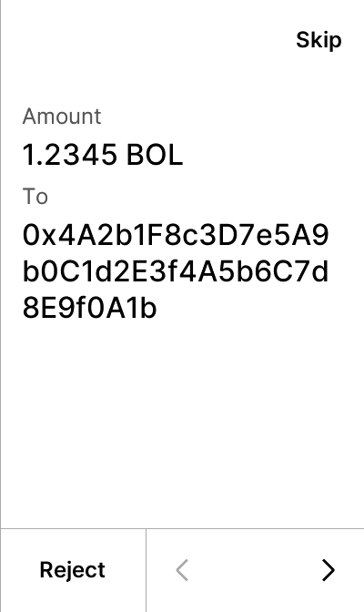
Next page{kind=link}
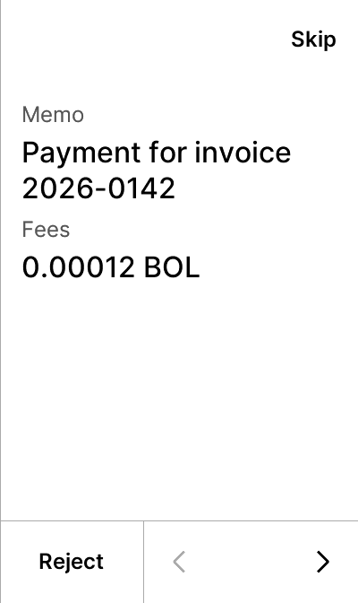
Next page{kind=link}
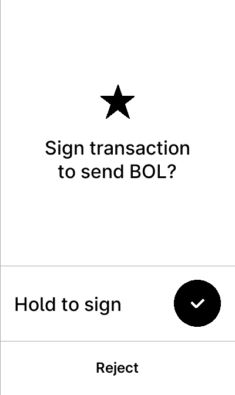
Hold “Hold to sign”{kind=link}
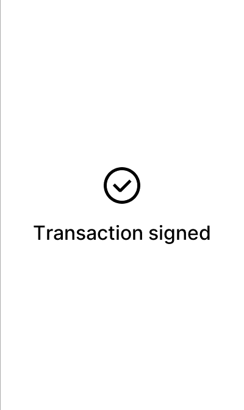
Generated 2026-09-22T15:06:27+00:00.